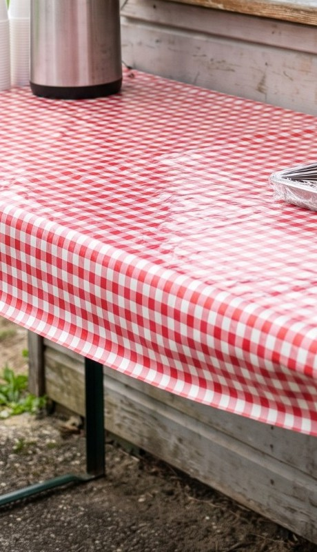
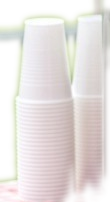

Devis gratuit en deux étapes
Recevoir mon devis
continosport.fr
Photos non contractuelles
Club ou entreprise
à vos couleurs
00
00
/30
produits
25,99 €
hors taxes dès 30 pièces
maillot + short, transport inclus
5,59 €
hors taxes dès 100 pièces
tote bag tout imprimé, transport inclus
produits, prix en ligne
Hors taxes, selon la quantité
